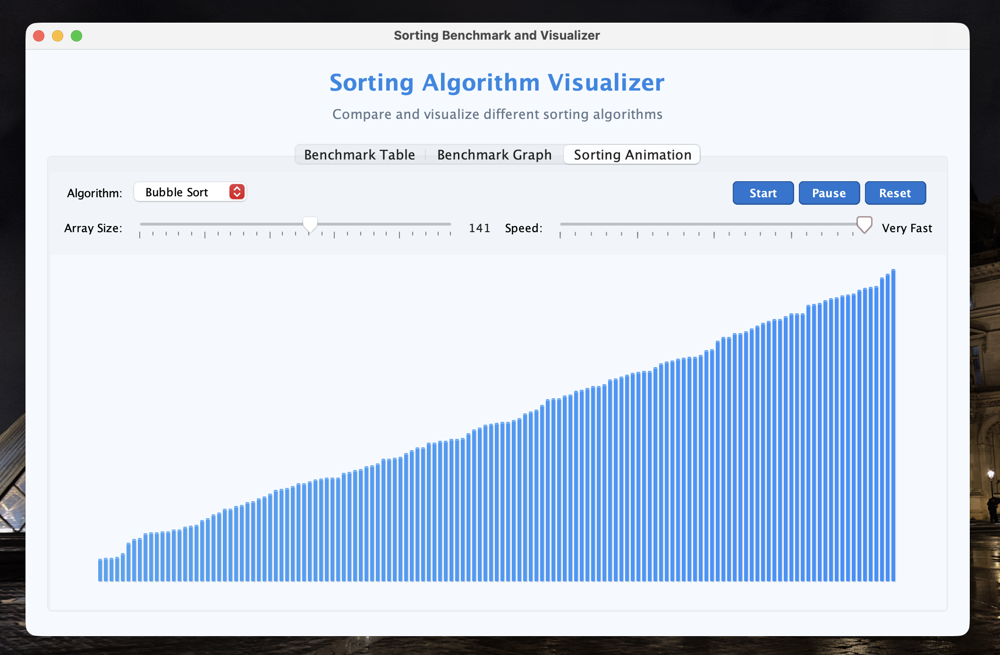
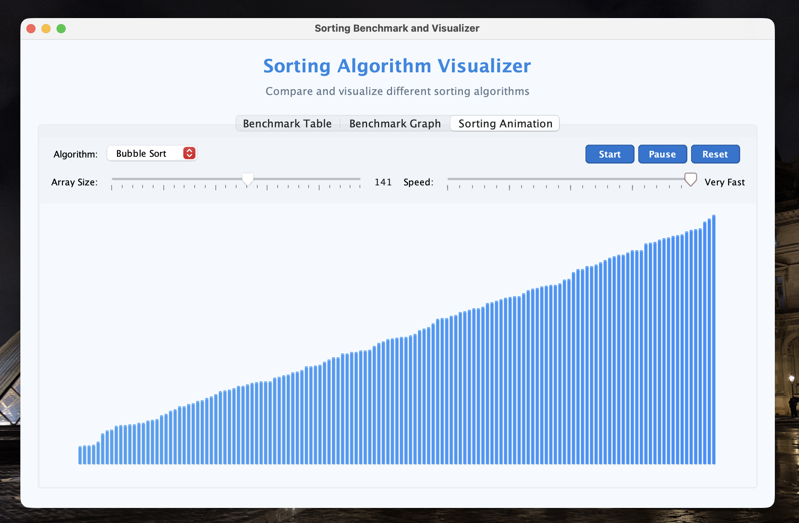

At the university level, I have continued to develop my engineering and programming skills through applied, project-based learning. I contributed to the High Park Development Project, where I worked on designing an accessible infrastructure solution within a real urban and environmental context, emphasizing sustainability, accessibility standards, and stakeholder needs. In parallel, I completed a MATLAB-based neuroimaging project grounded in linear algebra, where I analyzed brain-imaging data using matrix operations and computational techniques to extract meaningful insights. Together, these projects strengthened my ability to connect mathematical theory, programming, and engineering design to real-world problems.
APS111 - High Park Development Project
The High Park Development Project focused on designing an accessible and sustainable infrastructure solution within a real-world urban and environmental context. The project emphasized stakeholder analysis, accessibility standards, environmental preservation, and feasibility. Key deliverables included a team charter, clearly defined project requirements, and detailed conceptual design specifications that guided the development of the proposed solution. Through evaluating site conditions, comparing design alternatives, and justifying decisions based on technical, social, and environmental constraints, this project demonstrated how structured engineering design processes are applied to improve public spaces while balancing community needs and sustainability.
MAT188 - MATLAB Project
The MATLAB Project centered on applying linear algebra concepts to neuroimaging data analysis. Using MATLAB, I worked with large datasets representing brain-imaging information, performing matrix operations, transformations, and data refinement to extract meaningful results. The project demonstrated how abstract linear algebra concepts directly support real-world computational applications, particularly in scientific and medical contexts. Through this work, I strengthened my ability to use programming as a tool for mathematical modeling and data-driven analysis.
In high school I was able to further explore the idea of engineering and computer programming in my Computer Engineering and Computer Science classes. With Computer Engineering we were given the ability to explore computer hardware, networking, electronics, coding, and other bits of information that are discussed in the field. With this experience, I was able to further hone in on my career path and create some interesting projects that would have a valid purpose behind them. With Computer Science, I was given the opportunity to make websites and develop programs using HTML, CSS, Javascript, and PHP.
Grade 10 Computer Technology
The device that I created for my summative project was an Automatic Shirt Folder. My idea is very straightforward and it has the purpose to essentially fold clothing. Primarily, I am focusing on different types of shirts and polos but ideally, it can also be utilized for pants and other articles of clothing depending on how you utilize the machine and what your needs are. My device has a practical purpose and helps solve a real world problem that is often a hassle in your day-to-day life.


Grade 11 Computer Science
For my Computer Science Course in Grade 11, we were given the opportunity to work with website building. We began the course with the basics regarding the languages that we were going to use; HTML, CSS, and PHP. We then were given the opportunity to customize and create a template for ourselves that we could use for future assignments that would help display our skills and help complete tasks. This course not only allowed me to delve deeper into website building itself, but also allowed me to look at the work going on behind the scenes, and be able to manipulate code to make it look appealing and intriguing.

Grade 11 Computer Engineering
The device that I created for my summative project was an Automatic Shirt Folder. My idea is very straightforward and it has the purpose to essentially fold clothing. Primarily, I am focusing on different types of shirts and polos but ideally, it can also be utilized for pants and other articles of clothing depending on how you utilize the machine and what your needs are. My device has a practical purpose and helps solve a real world problem that is often a hassle in your day-to-day life.

Grade 12 Computer Engineering
The device that I created for my summative project was an Automatic Shirt Folder. My idea is very straightforward and it has the purpose to essentially fold clothing. Primarily, I am focusing on different types of shirts and polos but ideally, it can also be utilized for pants and other articles of clothing depending on how you utilize the machine and what your needs are. My device has a practical purpose and helps solve a real world problem that is often a hassle in your day-to-day life
 

Grade 12 Computer Science
In Grade 12 Computer Science, I developed a range of software projects that emphasized object-oriented programming, algorithmic thinking, and real-world applications. Major projects included a Java-based sorting algorithm visualizer to compare algorithm behavior and performance, a fully featured Pacman game in Java with real-time rendering, collision detection, and AI-driven ghost behavior, and a Soccer Team Generator web application that creates balanced teams using logical constraints and player data. I also designed and built this personal portfolio website to showcase my work, alongside several smaller object-oriented programs focused on clean design and problem-solving. Together, these projects strengthened my ability to design, implement, and communicate complex software systems effectively.